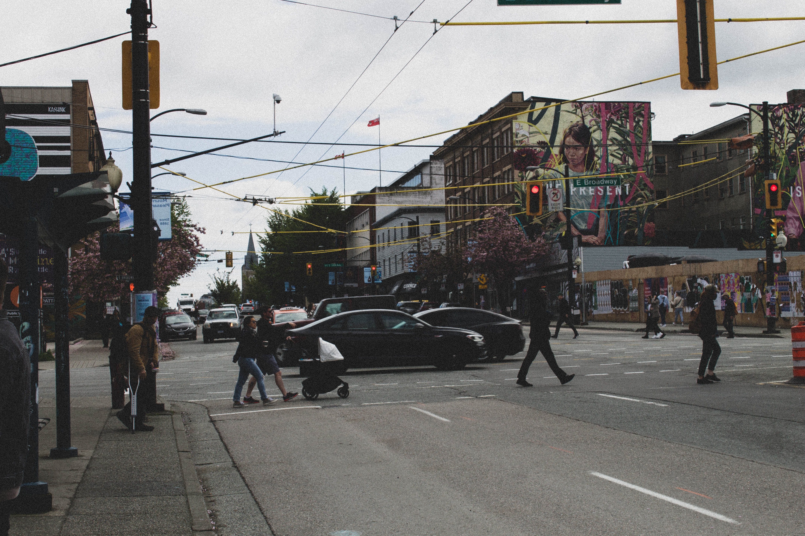
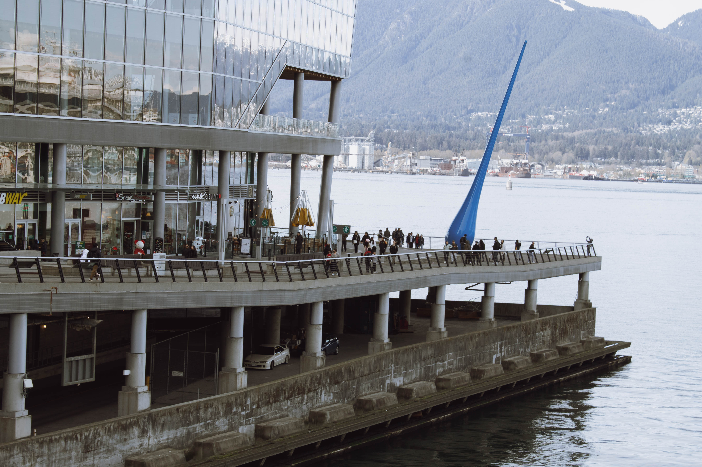
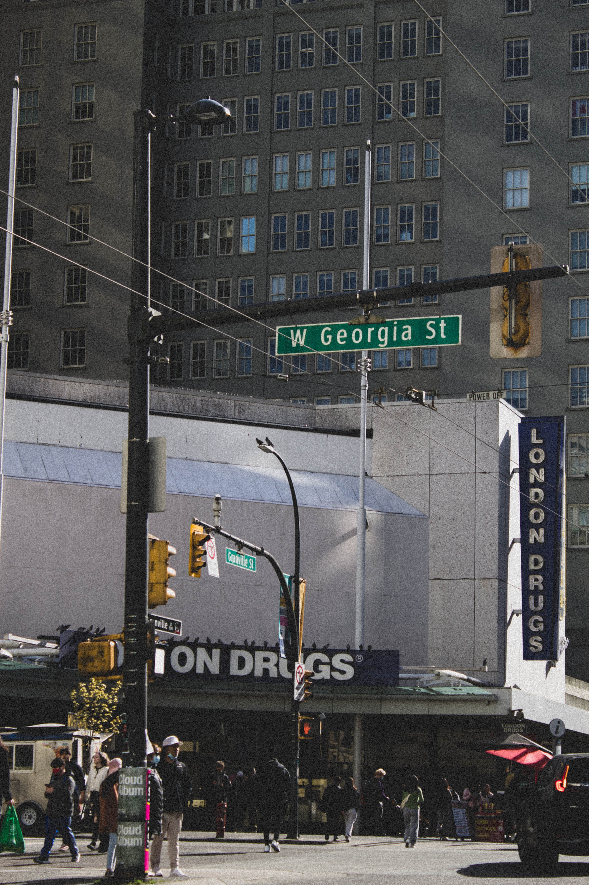
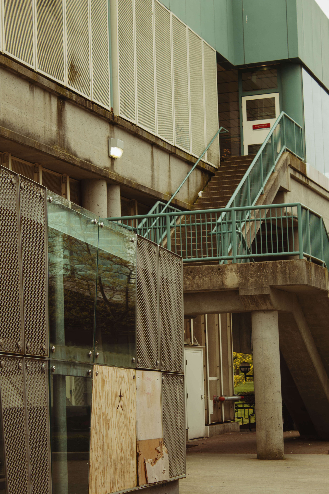
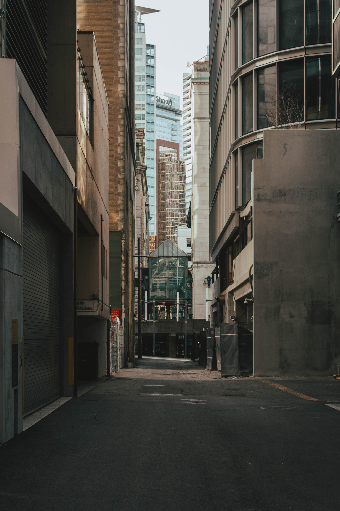
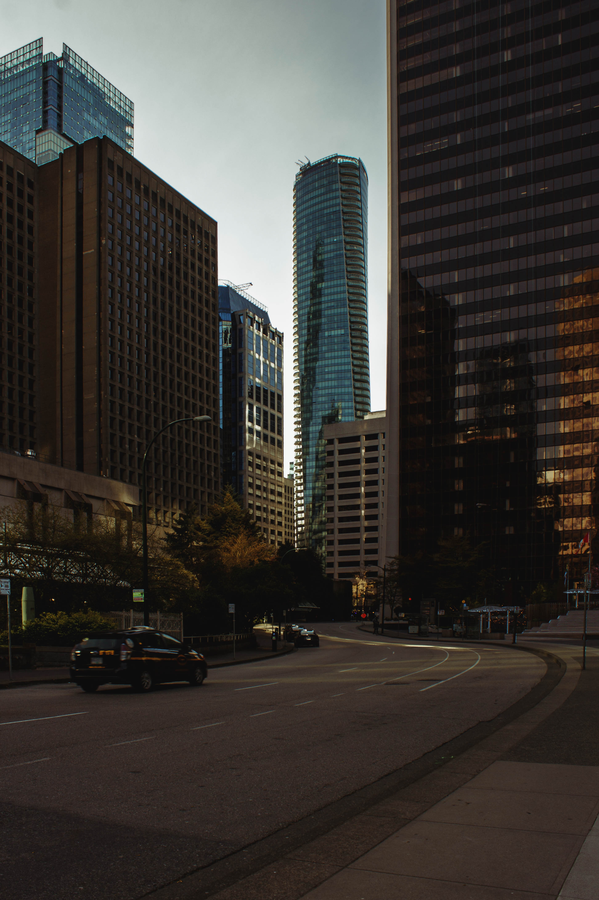
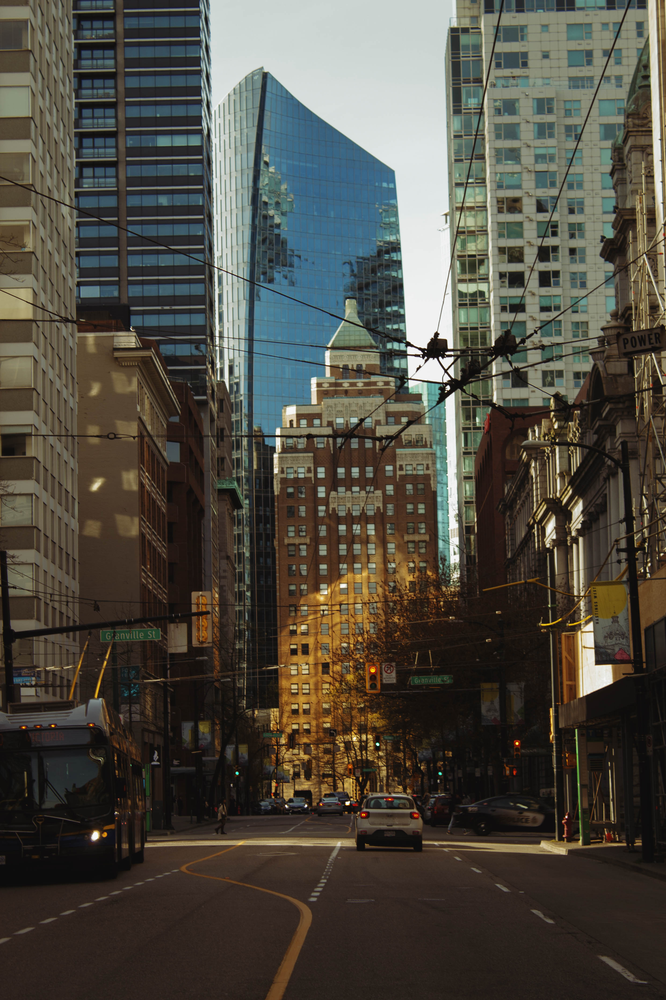

Street by Jayden Quilay. Taken in Vancouver, British Columbia.
The lifestyle Vancouverites live in. This shows what a normal street in Vancouver looks like, being the Main Street heading towards the downtown area. My piece called "Please!" is located beside this image.
49°15'47.6"N 123°06'02.9"W
2474 Main St

The Drop by Jayden Quilay. Taken in Vancouver, British Columbia.
Taken at the heart of Vancouver, this features the "The Drop". The piece was commissioned by VCC (Vancouver Convention Centre.)
49°17'17.3"N 123°06'51.8"W
Canada Place

Crosswalk by Jayden Quilay. Taken in Vancouver, British Columbia.
This is what it's like walking around Vancouver and it's busy streets.
49°16'57.6"N 123°07'04.9"W
Granville St - W Georgia St
Twice by Jayden Quilay. Taken in Vancouver, British Columbia.
Called the "Pink Alley" or "Alley Oop," it's further boosted in popularity due to the Korean Girl Group, "Twice" filming a scene for their music video, "Likey," and that is why I named the piece after them.
49°17'04.0"N 123°06'48.8"W
Seymour St

Station by Jayden Quilay. Taken in Vancouver, British Columbia.
Features a part of the Train system of Vancouver.
Location Unkown

大, Big by Jayden Quilay. Taken in Surrey, British Columbia.
Just taken outside the King George Skytrain station.
49°10'58.3"N 122°50'39.8"W
SkyTrain Access St

Narrow by Jayden Quilay. Taken in Vancouver, British Columbia.
Self-explanatory. This is one alley out of many.
Location Unknown

49°17'07.5"N 123°06'43.1"W by Jayden Quilay. Taken in Vancouver, British Columbia.
Taken on the adjacent street going to the Waterfront station.
W Cordova St

Matrix by Jayden Quilay. Taken in Vancouver, British Columbia.
A street at the downtown area. The reason why I named it matrix is because it gives that vibe.
Location Unknown

Granville Street by Jayden Quilay. Taken in Vancouver, British Columbia.
This was taken on one of the big streets in Vanouver, but I can't pinpoint the location quite exactly. This is a hard one.
Locaiton Unknown for now.